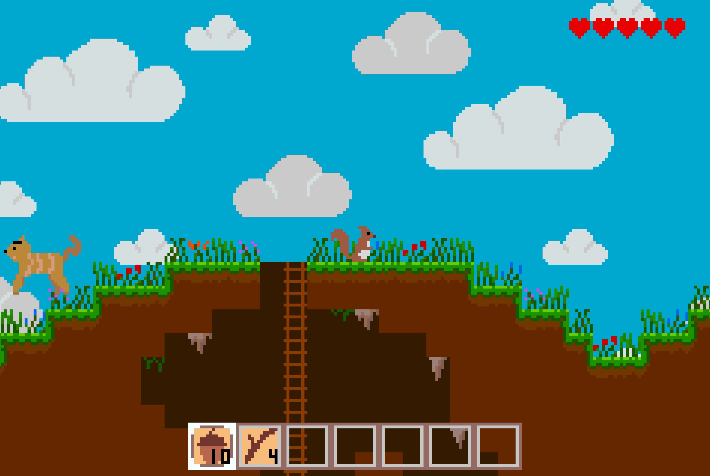

For a computer science class I took at Georgia Tech, I was tasked with creating a game for the GameBoy Advanced. The game I ended up making was heavily inspired by Terraria. In this game you are a squirrel, just trying to go about life, climbing up trees and collecting nuts. As you progress through the game you can get more and more tools to interact more and more with your environment. The project was coded in C, entirely from scratch apart from a few files that dealt with communicating with the GBA hardware. I coded the game engine from scratch and created all the art for the game.
Environment
Auto-Generated Landscape

The terrain is randomly generated every time you start a new game with trees, flowers and bushes randomly placed as well. There are landmarks like waterfalls and lakes randomly placed around the map as well. Making the game unique every time you start again!
Caves
The map also contains tunnel systems that are semi-randomly created and linked together. The screen dims when players go underground, making it slightly more difficult to navigate and adding intrigue to the caves below.
Day/Night Cycle and Seasons
The game cycles from night to day, at night the screen dims just like going underground. Players have to be more prudent since it is harder to see the bobcats that will try to eat you. As players pass more time in the game, the seasons change as well, cycling through summer, fall, winter, and spring as seen above.
Gameplay
Collecting Resources
The initial goal of the game is to just start collecting nuts and sticks, the two most basic resources. Players can climb up into the trees and break off a stick as well as collect the nuts from the tree. Nuts and sticks can only be collected from a tree once every few days in the game.
Trading
With nuts and sticks players can start to trade with other squirrels they encounter throughout the map. There are many different squirrels with different professions and some require rare items in order to trade with them. By trading with different squirrels, players can acquire tools like a hoe, a pickaxe and a sword.
Fighting
Players can defend themselves from the bobcats from an early stage by using sticks to hit them back, but the sticks won’t cause much damage. Once players are able to trade for a sword they can really start defending themselves and hunting the bobcats down.
Farming
Players can trade nuts for seeds from a farming squirrel which they can then plant things. Players can plant nuts, which grow into new trees, or the seeds which grow into strawberries. Players can then eat the strawberries to regenerate health and they can either be planted in the farmer squirrel’s farm or anywhere once they are able to acquire a hoe.
Endless Possibilities
The final feature I added into the game was the mining and building, unlocking the possibility for players to create wherever they wanted and to build homes for themselves to stay safe from the bobcats. Players can use a pickaxe to mine the dirt away and then use that same dirt to build all kinds of different structures.